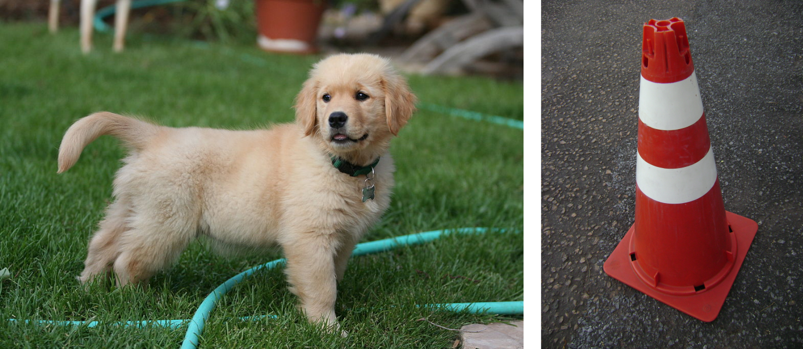
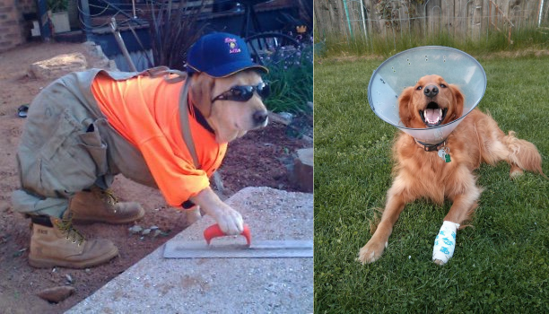
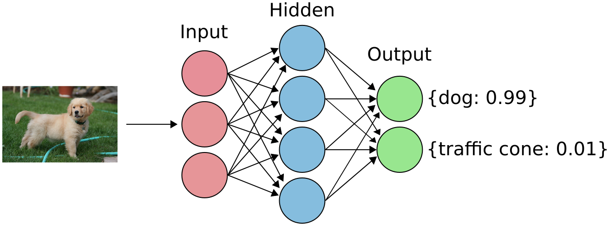

D is for Deep Learning
Deep learning is a class of machine learning algorithms that has exploded in popularity in the past decade. It powers many applications including computer vision, voice assistants, and translating text. While many of these applications might seem like magic, deep learning itself is not magic, and the underlying concepts are fairly easy to understand. The goal of this is to give you a high level overview so I’ll be glossing over some of the nitty-gritty details.
People train and apply deep learning models across a wide variety of problem domains and tasks. One of the most common use cases for deep learning models is classification where you are trying to predict which group of things a piece of data belongs to (e.g. classifying images as a cat or dog). In order to train this model you need to have a label for each image saying that it contains a cat or dog. A machine learning problem where you have labelled data is known as a supervised learning problem. If you don’t have labels then you need to use unsupervised techniques.
Distinguishing between dogs and traffic cones
To make this more concrete let’s use an (admittedly ridiculous) example. Let’s say we have a bunch of pictures, and we want to classify whether the image is of a dog or a traffic cone. This seems pretty simple on the surface because a traffic cone looks nothing like a dog.

You can probably think of some features that would distinguish these two groups such as:
- Is it orange?
- Is it cone shaped?
- Does it have fur?
This seems pretty clear cut to me. However, if you search a little bit, you can find some examples where the lines start to blur a little bit.

In one picture, there is orange and in the other there is a cone shape. In both cases however, they are both clearly dogs since they have fur. This means that some features are more/less important than others in being able to distinguish between the two groups (that is they have different weights).
So if we want to be able to effectively predict if an image is of a dog or a traffic cone, we need two things:
- Features
- A way to weight those features
It is challenging to come up with features and encode them into our program. For example, how would you code “this image has fur in it”? Even if we can code our features, it’s hard to be sure that they are useful in distinguishing between our groups of images. The appeal of deep learning is that it learns both the features and the weights. Typically, there are a large number of features and weights (way more than you would want to come up with manually), which is why things like GPUs are used to train deep learning models. We’ll go through this in more detail in the next section.
How does deep learning actually work?
Deep learning typically refers to large artificial neural network models. A neural network consists of multiple “neurons”. Each circle in the image below is a neuron. The neurons are grouped into layers, classified as input, hidden, or output layers. The “deep” part of deep learning means that there are many hidden layers in the model.

At a very high level, the input layer derives features from the data that you pass into it. The arrows connecting the layers are referred to as weights. The first hidden layer then receives the features from the input layer, multiplied by the weights between the two layers. If there are multiple hidden layers, then the first layer acts as an input layer for the second layer and so on. Finally, it goes to the output layer where the neural network makes predictions about the input data (e.g. is it a dog or a traffic cone). There is one neuron in the output layer for each class we are trying to predict. We can compare these predictions to their actual labels (e.g. the model predicted the image was a traffic cone but it was actually a dog). Each prediction also has a probability associated with it (e.g. “I am 99% sure this is a dog”). How you actually compare the predicted and actual labels is known as the objective function (sometimes referred to as a cost or loss function). We can use this objective function to update the weights in our model (using something called backpropagation). We repeat this process over and over again until we are satisfied with the model performance. This process is known as “training” a model.
The exact specifics of what makes up the layers is referred to as the network architecture. People generally choose a class of architecture based on the type of problem they are dealing with. For example, if you have image data you will typically choose a class of NNs called convolutional neural networks (CNNs). Within that general group of CNNs, people typically use a predefined architecture such as ResNet. If you have text data, you would typically use a class of models called recurrent neural networks (RNNs) or a subcategory of RNNs called long-short term memory networks (LSTMs).
Let’s go back to our dogs versus traffic cones example. If we wanted to train a model to distinguish between those two classes of images, we need to choose a couple of things
- A model architecture
- An objective function
Since we are dealing with images we will choose some flavour of CNN for our architecture. For the objective function we will choose something called “cross entropy loss”. Cross entropy loss not only measures if the prediction was correct or not but includes how confident the model was. In the case of cross entropy loss a lower number is better. It gives a high value if you are confident and wrong but penalizes you less if you are wrong but less sure about your prediction. Conversely, if you are confident and correct then the value of the loss function will be low. For example, if the model was very confident (e.g. 99% confident) that the picture was a dog but if it was a traffic cone then the value of the loss would be high.
Once we choose an architecture and an objective function, we can train the model. The weights in the model are typically initialized at random. You can also use weights from a pre-trained model (this is known as transfer learning. Training uses the labels and objective function to learn/update the weights in order to improve the predictions. I’ll talk about how the weights are actually updated (using something called backpropagation/gradient descent) in G is for Gradient Descent.
You might be wondering “what if there is a picture which contains a dog and a traffic cone?” This is referred to as multi-label classification where you are trying to predict all labels associated with some given input data (e.g. an image). This works in the same way, just with a different objective function.
Doing this in practice
If you want to learn more about deep learning and have some experience with python, I recommend taking fast.ai’s practical deep learning for coders course. It uses a “top-down” approach in which you learn to build and train models first, learning about each component as you need to.
If you actually want to implement a deep learning model, you should use an existing framework. Some popular python frameworks are:
Other resources
- Deep learning specialization on Coursera
- Deep learning from the foundations (part 2 of the fastai course)
- Neural Networks and Deep Learning: Crash Course AI #3